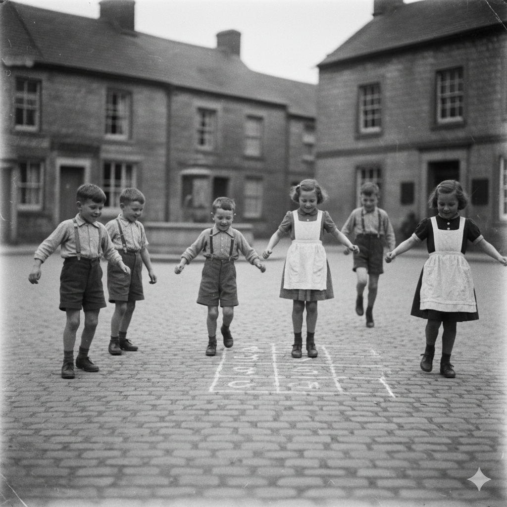

Ricordi di Scuola
Era il 23 Dicembre 1952 quando scrivevo sul mio quaderno: "Oggi in cortile abbiamo giocato a campana". È un gioco bellissimo perché serve solo un pezzetto di gesso e un sasso piatto. Si disegnano le caselle numerate per terra e si lancia il sasso verso il cielo.

1-2-3
Le Regole del Salto
- Non si deve mai calpestare la riga con il piede.
- Bisogna saltare su un piede solo nelle caselle singole.
- Nelle caselle doppie si possono appoggiare entrambi i piedi.
- Bisogna raccogliere il sasso senza perdere l'equilibrio.
La Vittoria
Chi arriva in cima alla "cupola" e riesce a tornare indietro fino alla base senza sbagliare un solo salto o toccare i bordi, vince la partita! È una prova di agilità che i nostri nonni amavano fare durante ogni ricreazione.
Il Sasso Fortunato